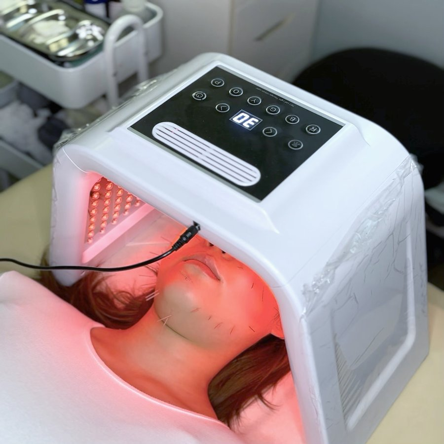
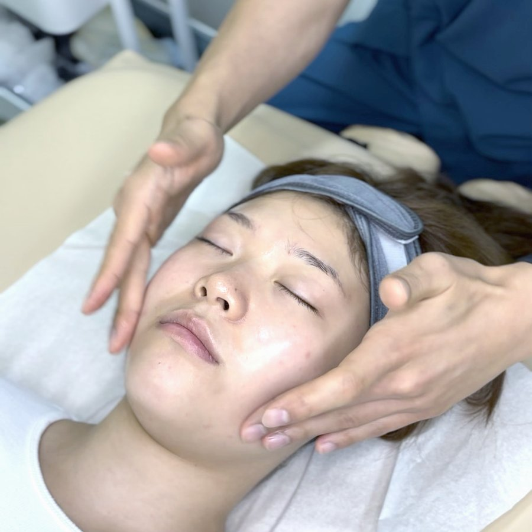
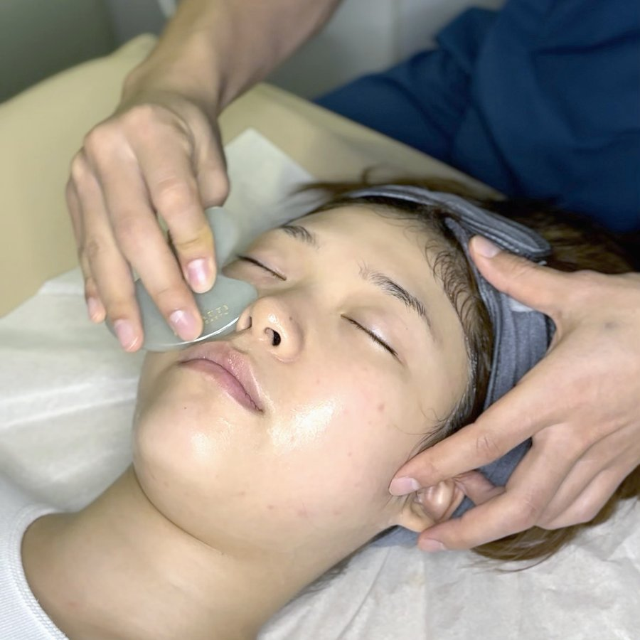
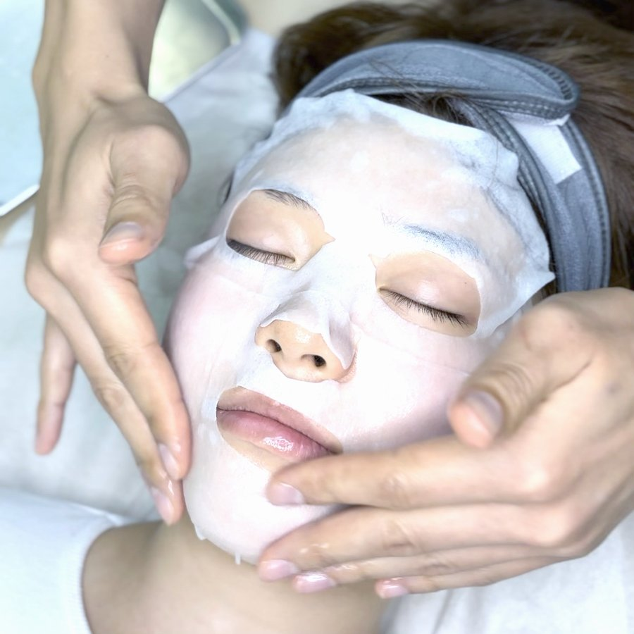
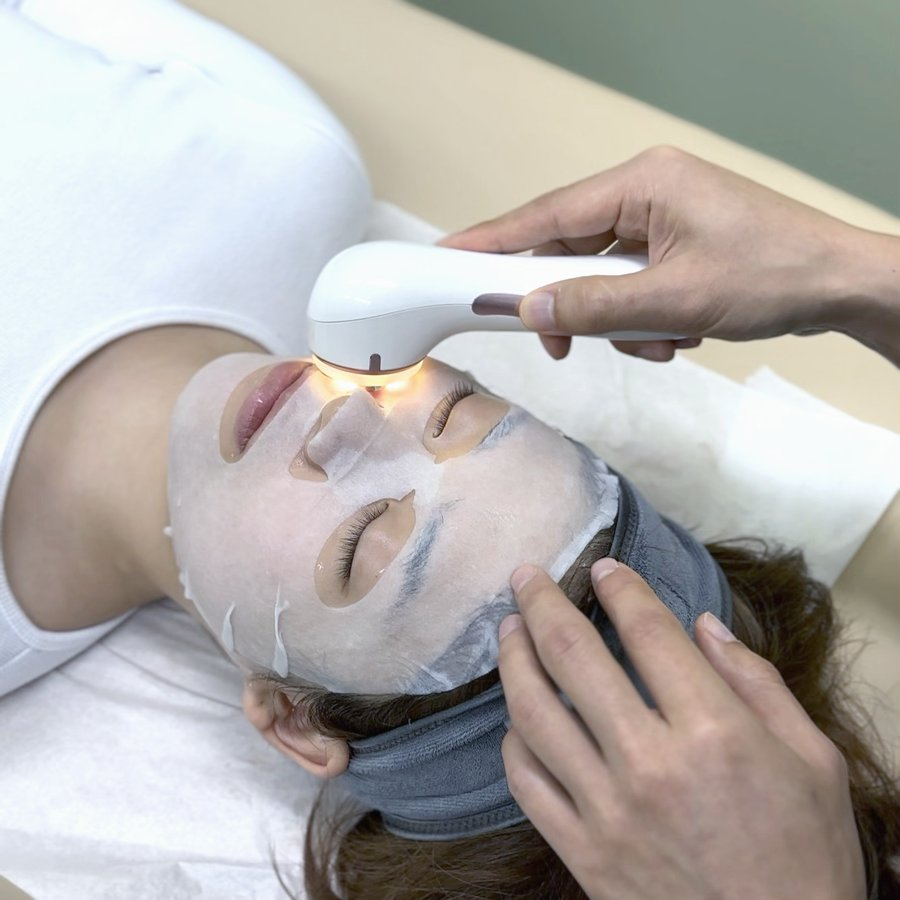

Facial & MTS Acupuncture
Discover the K-Beauty Magic of
Facial Acupuncture Vancouver
At Greenleaf Acupuncture Clinic in Vancouver, we bring you the latest in K-beauty innovation with our Facial Acupuncture service. This natural and effective treatment supports your skin's own repair process, enhances your overall appearance, and unlocks the secrets of timeless beauty.
01
Reduces Wrinkles & Fine Lines
Achieve a smoother, more youthful complexion
02
Boosts Circulation & Skin Elasticity
Enjoy firmer, more supple skin
03
Provides a Natural Lifting Effect
Experience a non-invasive facelift
04
Balances Skin Tone & Improves Symmetry
Achieve a more harmonious facial appearance
05
Regenerates New Skin Cells & Diminishes Acne Scars
Reveal fresher, clearer skin
Four Ways to Experience It
We offer personalized treatments designed to restore your skin's natural balance and radiant glow. Each program blends Facial Acupuncture and MTS in different ways — choose from four specialized care programs.
01
Essential Care
Best For
Maintaining healthy skin, addressing minor fine lines, and basic pore concerns.
What's Included
Basic facial acupuncture or MTS treatment, paired with LED therapy and manual massage (or steam pore cleansing).
02
Signature Care
Best For
Combination skin, acne scars, TMJ concerns, and targeted skin improvements.
What's Included
Enhanced facial acupuncture with LED therapy, plus a specialized add-on: deep pore cleansing, oxygen infusion, or facial cupping.
03
Prestige Care
Best For
Targeting dry skin and deep wrinkles for the ultimate radiant glow.
What's Included
Our most comprehensive treatment, combining advanced facial acupuncture or MTS with intensive skincare. Your practitioner customizes and combines 3–4 modalities from 10+ advanced services.
04
Acne Special Care
Best For
Active acne breakouts, inflammation, congested pores, and troubled skin.
What's Included
Targeted facial acupuncture, professional exfoliation to clear dead skin cells, and High Frequency Therapy to help address acne-causing bacteria and calm inflammation.
Traditional Needling, Modern Results
Very fine needles placed along the face and neck to support the skin's own collagen and repair process — paired with LED therapy, massage, gua sha, and a calming mask.
Skin rejuvenation, treated from underneath
Facial acupuncture uses very fine needles placed along the face and neck to create controlled micro-trauma — a signal that prompts the skin to rebuild itself. Combined with LED light therapy, Korean facial massage, gua sha, and a calming mask, each session is designed to support the skin's natural repair process rather than temporarily smoothing the surface.
Because facial concerns are often connected to circulation, tension, and overall vitality, we look at what's happening underneath the skin — not just the skin itself — before building a treatment plan.
What's included in a session
A Facial Acupuncture visit is a full treatment, not just needling. Every session can include:





How facial acupuncture works
Each element of the session plays a specific role in supporting the skin's own repair process:
Collagen Stimulation
Micro-trauma from the needles prompts new collagen production, softening fine lines over time.
Increased Blood Flow
Better circulation brings nutrients and oxygen to the skin for a healthier-looking glow.
Muscle Relaxation
Releasing tension in facial muscles softens the look of expression lines.
Lymphatic Drainage
Encouraging lymph flow helps reduce puffiness and evens out skin tone.
Cell Turnover
Stimulation supports faster skin cell renewal, which can help with scarring.
Whole-Body Approach
Skin reflects overall health, so we also address sleep, stress, and circulation.
Collagen Induction, Precisely Applied
A different technique with a similar goal: controlled micro-punctures that trigger the skin's own collagen response — often paired with facial acupuncture for a more complete result.
Micro-Needling Therapy System (MTS)
MTS is a minimally invasive treatment that creates controlled micro-punctures in the skin, prompting your skin's natural healing response — a collagen induction technique that pairs well with facial acupuncture or stands on its own.
What Is MTS
- Collagen induction therapy
- A device with multiple fine micro-needles
- Controlled micro-injuries that trigger natural healing
Effects of MTS
- Boosts collagen and elastin production
- Improves skin texture and firmness
- Softens fine lines, wrinkles, and scars
- Minimizes the appearance of pores
- Helps with hyperpigmentation and sun damage
Facial Acupuncture vs. MTS — what's the difference?
Both treatments support skin health, but they're built for slightly different goals. Many patients combine the two for a more complete result.
Facial Acupuncture
- Rebalances overall skin health
- Softens the look of wrinkles
- Provides a natural lifting effect
- Supports facial symmetry
- Supports the body's detox and healing response
MTS Acupuncture
- Stimulates collagen production
- Softens the appearance of scars
- Improves skin texture and tone
- Supports cell turnover and renewal
- Reduces the visible size of pores
Frequently asked questions
How does Facial Acupuncture work?
What's the difference between Facial Acupuncture and MTS?
Can Facial Acupuncture help with TMJ (jaw) tension?
What should I do before and after treatment?
Facial Acupuncture has no special aftercare — you can resume normal activities right away.
For MTS, please follow these guidelines:
- Avoid sun exposure for 48 hours; use SPF if you must go outside
- Avoid makeup (other than sunscreen) for 48 hours
- Avoid activities that cause excessive sweating (e.g. hot yoga, sauna) for a day or two
- Skip swimming, hot baths, and steam for 48 hours
- Use gentle, hydrating skincare and avoid scrubs/exfoliants for a few days
- Don't touch, scratch, or pick at the treated area
- If any peeling or flaking occurs, let it fall off naturally rather than picking or removing it by hand